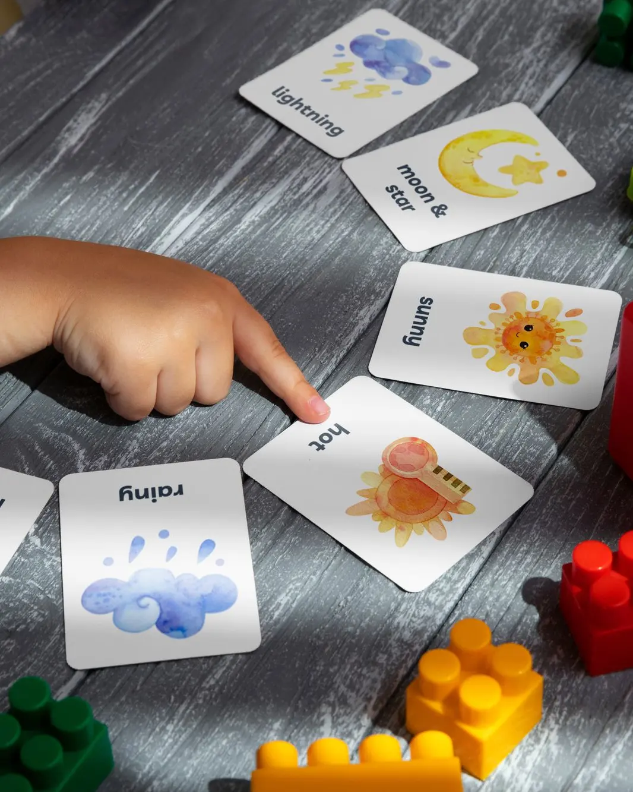
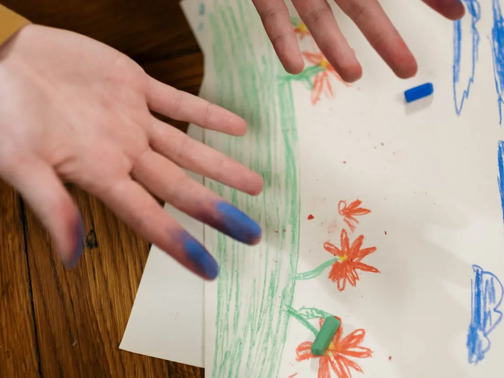
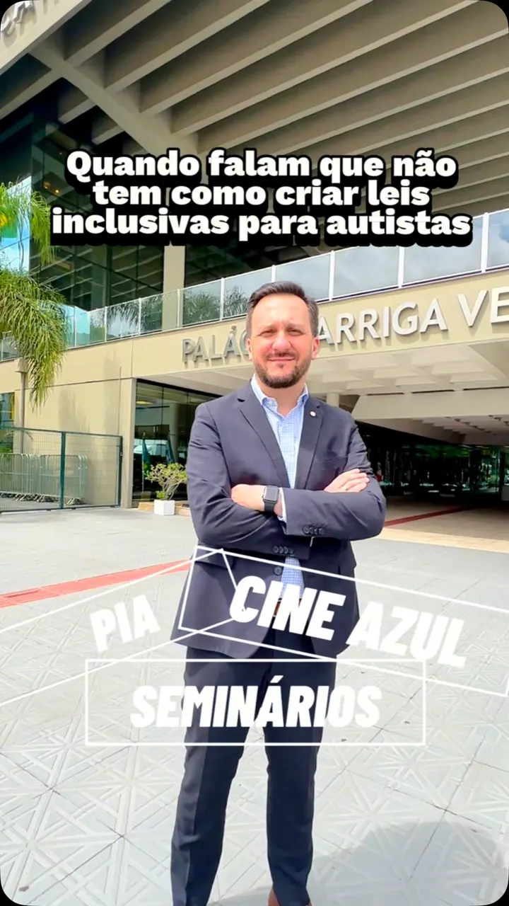
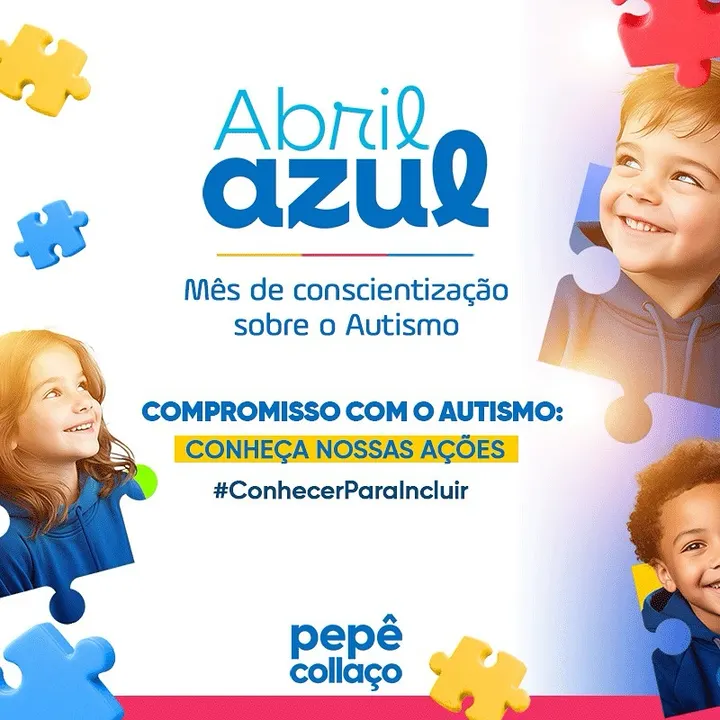
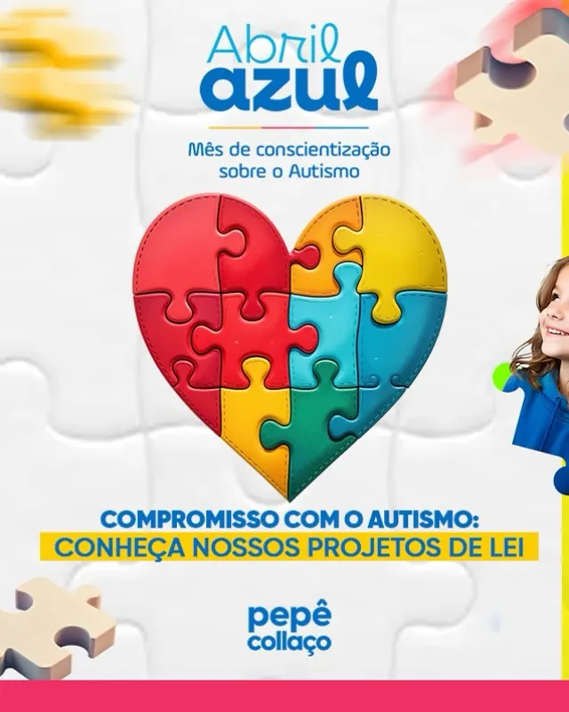
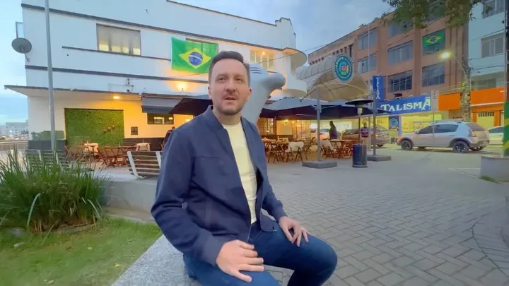
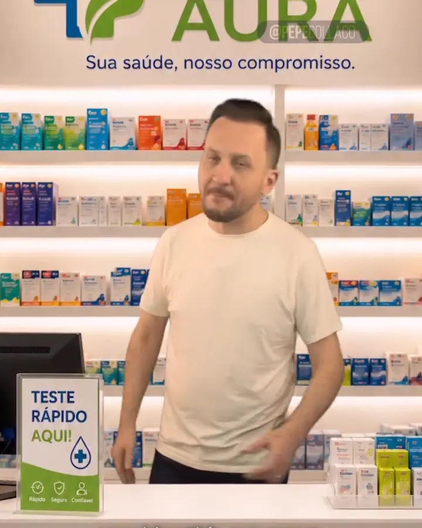
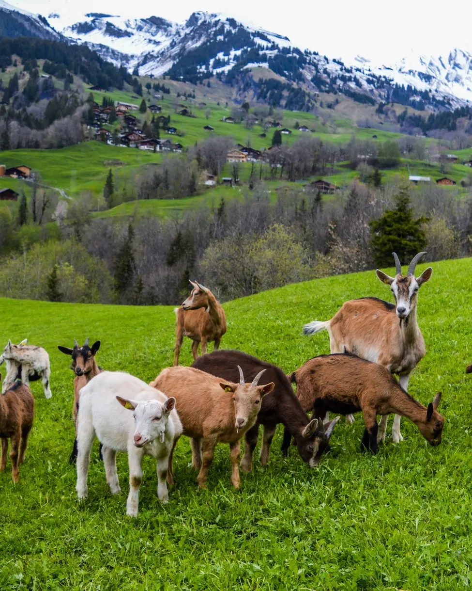

Ver o postInclusão nas escolas com o PIA, garantindo aprendizado mais justo.
Pepê Collaço, no Instagram
Atividades e avaliações adaptadas para alunos com autismo e outros transtornos globais do desenvolvimento, nas escolas de Santa Catarina.

Imagem ilustrativaLer a tramitação completa no e-LegisDispõe sobre Protocolo Individualizado de Avaliação (PIA) para os alunos com Transtornos Globais do Desenvolvimento, incluindo-se Transtorno do Espectro Autista - TEA, nas Instituições de Ensino do Estado de Santa Catarina
Ementa oficial · PL 0322/2023 · Alesc

Imagem ilustrativaVer o postInclusão nas escolas com o PIA, garantindo aprendizado mais justo.
5 posts do @pepecollaco sobre o PIA, do primeiro, em dezembro de 2024, ao mais recente, em setembro de 2026. Não é assunto de campanha: é trabalho de mandato.

Reel 02dez2024 Sobre o PIA @pepecollaco02/12/2024 AUTISMO, eu defendo! 16916
Carrossel 01abr2025 Sobre o PIA @pepecollaco01/04/2025 AUTISMO DEFENDIDO COM AÇÕES! 15122
Carrossel 08abr2026 Sobre o PIA @pepecollaco08/04/2026 AUTISMO É PRIORIDADE 5814
Reel 02set2026 Sobre o PIA @pepecollaco02/09/2026 Conheça o trabalho do seu deputado! 25524 Reel
15set2026
Sobre o PIA
@pepecollaco15/09/2026
Acolher é fazer a diferença.
42760
Reel
15set2026
Sobre o PIA
@pepecollaco15/09/2026
Acolher é fazer a diferença.
42760
O que mais o mandato fez pelas pessoas com TEA e pelas famílias atípicas de Santa Catarina.
Criada pelo mandato para o assunto entrar na pauta da Alesc e nunca mais sair. Não é pauta de um mês do ano: é causa permanente.
Plataforma para mapear as pessoas com TEA em Santa Catarina. Sem conhecer a realidade, não dá para criar política pública de verdade. Hoje o Estado não sabe quantas famílias precisa atender.
Sessões de cinema adaptadas: luz parcialmente acesa, som mais baixo e um ambiente tranquilo. Lazer em família, com acolhimento.
AprovadoLei nº 19.160/2025 Entender a leiO aluno com TEA segue com o mesmo segundo professor no ano seguinte. O vínculo não recomeça do zero.
EM COMISSÕES Entender a leiMais de 2 mil pessoas capacitadas nos seminários do mandato, em várias regiões de Santa Catarina.
Espaços que acalmam, estimulam os sentidos e ajudam a criança a aprender, com recurso do mandato em escolas de cinco cidades.
Terapia com cavalos e terapia ocupacional perto de casa, com sessão marcada toda semana.
Por lei do deputado, as Associações de Pais e Amigos do Autista de Rio Rufino (Lei nº 20.032/2026) e de Tijucas (Lei nº 19.049/2024) são de utilidade pública estadual. O título abre portas para receber apoio.

AprovadoLei nº 19.011/2024 Testes rápidos nas farmácias Testes rápidos e exames na farmácia perto de casa, com as regras de segurança da Anvisa. Entender a lei Imagem ilustrativa AprovadoLei nº 19.785/2026 Energia solar nos hospitais filantrópicos Recursos do Fundo Social para pôr painéis solares nos hospitais filantrópicos. Entender a lei Imagem ilustrativa AprovadoLei nº 18.673/2023 Rota Turística das Águas Termais A rota estadual que põe as cidades termais do Sul no mapa do turismo. Entender a lei
Imagem ilustrativa AprovadoLei nº 19.225/2025 Incentivo à ovinocaprinocultura Apoio a quem cria ovelhas e cabras, com crédito e espaço na merenda e nos hospitais. Entender a lei Imagem ilustrativa AprovadoLei nº 19.160/2025 Cine Azul Sessões de cinema adaptadas para crianças e adolescentes com autismo e suas famílias. Entender a lei Imagem ilustrativa EM COMISSÕES Continuidade do segundo professor O aluno com autismo segue com o mesmo segundo professor no ano seguinte. Entender a lei